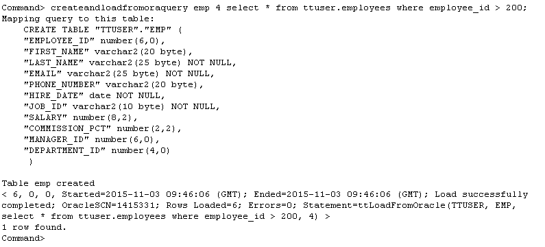
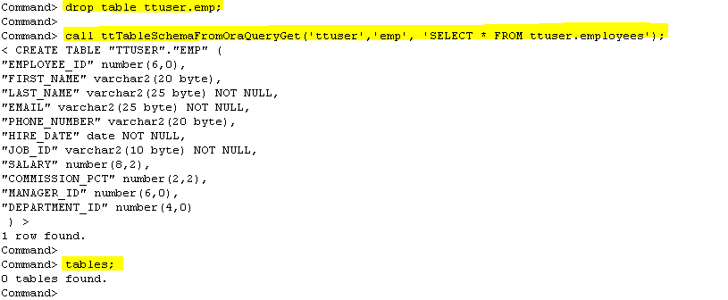
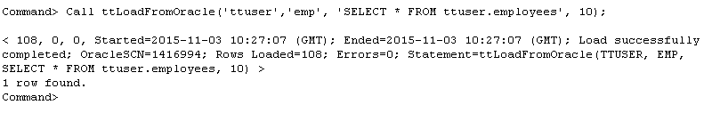

This tutorial provides a step-by-step example on how to use the TimesTen ttIsql command or TimesTen built-in procedures to load data from an Oracle database into a TimesTen database.
TimesTen Database provides two methods that will execute a user-provided query on an Oracle database and load the result set into a TimesTen database table; via a ttIsql command or two TimesTen built-in procedures.
- The ttIsql command createandloadfromoraquery automatically creates the table in TimesTen, executes the query on the Oracle database, and loads the result set into the table.
The ttTableSchemaFromOraQueryGet built-in procedure evaluates the user-provided query and generates a CREATE TABLE statement that matches the column definitions returned by the result set.
The ttLoadFromOracle built-in procedure is designed to achieve faster and parallel loading with error handling capability. It is used to executes the SELECT statement on the Oracle database and loads the result set into the TimesTen existing tables. It can also be invoked by createandloadfromoraquery command and ttImportFromOracle utility in their data loading stage.
Note: In order for the TimesTen database to connect and fetch the data from the Oracle database, you must also supply the Oracle user password and the Oracle net service name as part of the TimesTen connection string.
Use createandloadfromoraquery command
The ttIsql utility provides the createandloadfromoraquery command that, once provided the TimesTen table name and the SELECT statement, will automatically create the TimesTen table, execute the SELECT statement on Oracle, and load the result set into the TimesTen table.
In this section we will create and populate a table using the createandloadfromoraquery command in ttIsql.
Examples:
- In a terminal session, use ttIsql to connect to sampledb as the user ttuser.
$ ttIsql -connstr "DSN=sampledb;uid=ttuser;pwd=ttuser;oraclepwd=oracle;oraclenetservicename=ttorcl"
Note: The Oracle password for scott and the Oracle net service name to the underlying Oracle database are both included in the connection string. - Use the ttIsql command createandloadfromoraquery to load the results from running the query createandloadfromoraquery emp 4 select * from ttuser.employees where employee_id > 200; on the Oracle database, into a TimesTen database table called TTUSER.EMP.
The table TTUSER.EMP is populated using four parallel threads. The TTUSER.EMP table is created with the same column names and data types as the columns of the retrieved rows.
Command> createandloadfromoraquery emp 4 select * from ttuser.employees where employee_id > 200;
The output indicates the TTUSER.EMP has been created with 6 rows loaded from Oracle database ttuser.employees table into TimesTen database.
Note: The createandloadfromoraquery commands invokes the ttLoadFromOracle built-in procedure to load the data from Oracle database automatically.
In this section, you will learn how to use the TimesTen built-in procedures to load the results of a SQL query from a back-end Oracle database into a single table on TimesTen without creating a cache group to contain the results.
Use ttTableSchemaFromOraQueryGet Built-In Procedure
-
The TimesTen built-in procedure ttTableSchemaFromOraQueryGet() generates a CREATE TABLE statement that matches the column definitions returned by the result set of a user-provided query.
- To verify this built-in procedure, execute the following commands:
$ttIsql -connstr "DSN=sampledb;uid=ttuser;pwd=ttuser;oraclepwd=oracle;oraclenetservicename=ttorcl"
Command> drop table ttuser.emp;
Command> call ttTableSchemaFromOraQueryGet('ttuser','emp', 'SELECT * FROM ttuser.employees');
Command> tables;
Here is the sample output from running the above command:

The output indicates there is no table created after executed the ttTableSchemaFromOraQueryGet built-in procedure. - Manually execute the CREATE TABLE statement to create a table TTUSER.EMP in TimesTen database.
Below is the content of the statement.
CREATE TABLE "TTUSER"."EMPLOYEES" (
"EMPLOYEE_ID" number(6,0),
"FIRST_NAME" varchar2(20 byte),
"LAST_NAME" varchar2(25 byte) NOT NULL,
"EMAIL" varchar2(25 byte) NOT NULL,
"PHONE_NUMBER" varchar2(20 byte),
"HIRE_DATE" date NOT NULL,
"JOB_ID" varchar2(10 byte) NOT NULL,
"SALARY" number(8,2),
"COMMISSION_PCT" number(2,2),
"MANAGER_ID" number(6,0),
"DEPARTMENT_ID" number(4,0)
);
The ttLoadFromOracle built-in procedure executes the SELECT statement on Oracle database and loads the result set into the TimesTen table in parallel. In 18.1 release, a new parameter, Options, is added to allow users to specify several new options controlling the load mode and error handling.
The Syntax is as follows:
ttLoadFromOracle ('TableOwner', 'TableName', 'Query', NumThreads, 'Options');
Examples:
Call ttLoadFromOracle('ttuser','emp', 'SELECT * FROM ttuser.employees', 10);
In this example, the entire ttuser.employees table will be loaded from Oracle database into TimesTen table TTUSER.EMP using at most 10 threads.
Here is the sample output from running the above command:

For more details and usage information, see "Loading data from an Oracle database into a TimesTen table" in the Oracle TimesTen In-Memory Database Operations Guide.